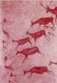

Jesús de Neanderthal
 De: La Frikipedia, la enciclopedia extremadamente seria.
De: La Frikipedia, la enciclopedia extremadamente seria.
De la serie grandes personajes:
| Nacimiento
|
50000 a.c.
|
| Muerte
|
49969 a.c.
|
| Ocupación
|
Mesías fracasado
|
| Nacionalidad
|
Cuevas de Altamira
|
| Malo o bueno
|
Regular
|
| Atentados contra la humanidad
|
Intentar propagar el cristianismo
|
| Religión
|
¿Que creéis vosotros? por supuesto que es el neaderthalismo
|
| Notas
|
Un kilo de patatas, leche semidesnatada, media docena de huevos y coca cola.
|
Poco conocida primera venida al mundo de la encarnación del dios del cabeza propinada por un Homo Sapiens, antes de que propagara su religión, por lo que no tuvo éxito.
Biografía
Lo poco que se sabe de su vida se ha inferido de pinturas rupestres: Al parecer nació en una cueva alrededor del año 50.000 a.C., hijo de madre soltera. Por aquellos tiempos la vida era dura debido a la glaciación, que hacía que uno no tuviera muchas ganas de pensar en religión, por lo que su misión era muy dificultosa.
Al cabo de los años, empezó a predicar, pero un El elegido (el peje no; Jesús de Nazareth), quedando esta encarnación de Jesús en el olvido. El Monstruo Espaguetti Volador decidió que ya era el momento y montó a Noe en un arca con una jirafa para encontrar a Bin Laden.
Representaciones de Jesús de Neanderthal
Se han encontrado en Altamira representaciones de sus primeros milagros, entre los que destacan:
- En ciertas pinturas se ven claramente sus primeros pinitos en transmutaciones, convirtiendo el hagua en un dientes de sable llamado Herodes que posteriormente se cargaría media aldea.
- En otra de las pinturas se ve como multiplica de forma milagrosa el número de peces que caían en las redes introduciendo panes en éstas
- Se han encontrado también ilustraciones de su increíble don para caminar (y caerse) sobre el hagua helada, dejando boquiabiertos a sus congéneres estúpido
- Muchos aseguran que en la pared oculta de la cueva (sí, esa que no se puede ver porque está oculta) han encontrado la historia de como Jesús de Neanderthal revive a un tal Lazarillo de Tormes, el cual protagonizaría posteriormente un libro de aventuras en el que se enfrenta con un sable láser, un anillo de poder y un bichejo feo como el demonio llamado Yoda (ancestro de Puyol) a un ciego que le impedía comer queso a Jesús de Neanderthal cuando era un niño, a un escudero y a un fraile, protestante por supuesto. Parece que este fraile fue el verdadero Fraile Gordo de Joguarts, muerto por el Barón Sanguinario cuando la Inquisición empezó la caza de chamanes antropófagos y falófagos durante el Neolítico.
- En una de las pinturas más representativas se pueden leer claramente la frase "tonto el que lo lea" ademas de "neandertal rule´s" y "jesus estubo aqui" ( esta ultima encontrada sobre un excremento fosilisado, el cual suponemos, fue utilizado para escribir) , sirviendo de ejemplo de la conocida gracia de Dios
 Pinturas que representan a Jesús convirtiendo a los hombres en ciervos.
Otros milagros
- Curó a un tuerto de su tribu dándole un hostia. Lo dejó ciego del todo pero ya no estaba tuerto.
- Predijo la llegada de El elegido( no, no es el peje).
- Revivió a su colega Hashrùck para que se convirtiera en su apóstol (nada mas revivirlo le mandó a predicarle a un tiranosaurio que andaba por ahí).
- Nació por la gracia del espiritu santo de una mujer virgen. De otro modo su nacimiento no tendria explicación ya que su madre era fea hasta para los neanderthales.
- Chocó dos piedras e hizo fuego (los neanderthales se conformaban con poca cosa en cuestión de milagros).
- Impidió que Diox utilizara al chámbuche para matar a Dios,
Apostoles
- Pierrol::Primer apóstol y mano izquierda de Jesús(no sabemos donde
coño tenía la derecha, aunque suponemos que rascandose los genitales). Llamado así por su afición a masticar piedra y por el horroroso olor de sus pies.
- Hashrùk:Colega de Jesús que se hizo su apóstol después de revivir unas cuantas veces.
- Okko-mokko:apóstol que tras la muerte de Jesús negó tres veces haberse comido un trozo de su brazo.
- Fraga:¿Hace falta explicar quién es éste?
- Nujas:Vendió a su señor por medio bollo. Después de darse un morreo con Jesús, este le rechazó. Así que Nujas se cabreó y le dijo al homo-sapiens donde estaba Jesús (es una pena que después se atragantara con el bollo).
- Pedro Picapiedra: sustituto de Pierrol cuando este se murio de tanto masticar piedras , se convertiria en el primer papa de esa epoca
- Pablo Marmol:amante de Pedro siguio a Jesus solo porque Pedro lo hizo , fueron los primeros gays de la historia.
- Capitan Cavernicola:el primero de los apostoles en recibir al terodactilo santo y de ahi obtuvo sus poderes.
- Mario Baracus:Este negro se metio ahi por que todos eran negros y mal vestidos (el maricon se sintio admiido en este pedazito de sociedad) como el, igual otravez se sintio rechazado pero lo admitieron sin collares ni nada de esas porquerias que tenia en la cabeza.
Reliquias de la primera venida
- La piedra con la que le abrieron la cabeza.
- El santo Neanderthal: el cuenco con el que sus apóstoles se bebieron su sangre después de que lo mataran.
- La mordaza santa: la tela con la que le tapaban la boca cuando se ponía pesado.
- El pelo que le arrancaron para hacer abrigos(osea que llevo puesto una de sus reliquias)
- Actualmente aun se conservan 2 de los tres pelos que (segun las escrituras) tenia en el testiculo izquierdo
- Y el excremento antes mencionado
La segunda venida
No se le volvió a ver hasta el año 3 a.C., cuando renace como Gueppettho, quería que fuera a la escuela, pero su madre, la sextercios y medio al día por enseñarlo a los pastores.
Con cinco años era capaz de meterse en la boca del lobo y rescatar a Mirra. A los ocho años se subió a un monte a charlar con una garza ardiendo. A los once se circuncidó él solo.
Se sabe poco de su adolescencia, aparte de que mantuvo una tórrida relación con una tal cápsula del tiempo para evitar que conquistaran el mundo.
(Para mas información sobre a segunda venida consultar: Jesús de Nazaret)
Ver Tambien
Autor(es):
- Krusher
- Nexo
- Er Makina
- Cortocircuito
- SITORELOADED
- MURO DE AGUAS
- Tako
- Frikiman
- Aque
- Alex2610
Frikipedia 2005-2016, Licencia
GFDL 1.2 - Extraído por FrikiLeaks